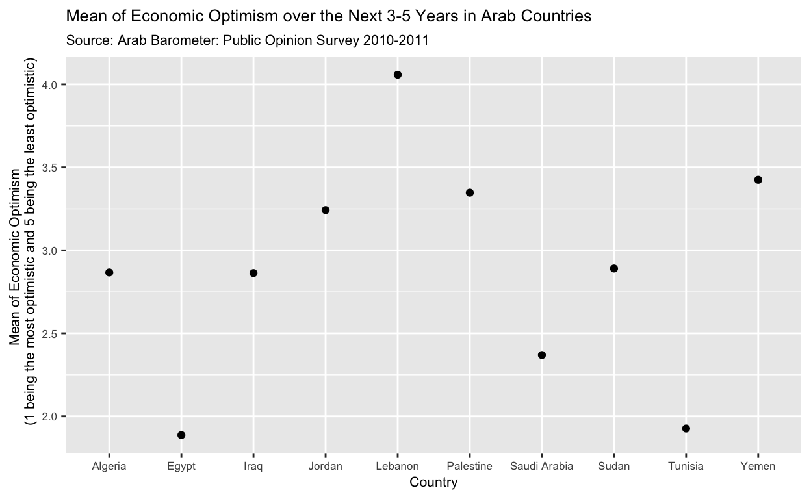

My final project
I am interested in exploring data related to unemployment in the MENA region. I am particularly interested in exploring the trajectory of unemployment rates since the Arab Spring, since that was a driving factor in many countries. While some countries unemployment rates have dropped, others see even higher rates than before the protests and revolutions started. As such, I would be interested to see if there is a pattern between the effectiveness and changes that emerged post-Arab Spring, and unemployment rates.
Do greater economic concerns and problems correlate to increased mistrust in the government, and how has this changed since the Arab Spring in the Arab states? I will explore how people’s economic concerns have shifted in Arab countries and how this relates to how much they trust their government. I hypothesize that prior to the Arab Spring and in its early days, there were significant economic concerns and significant government mistrust. However, as the subsequent revolutions died down, economic apathy decreased and citizens’ faith and and hope for their government increased until the pandemic where economic apathy and government mistrust returned. I will rely on data from the Arab Barometer Surveys (https://www.arabbarometer.org/survey-data/). They have seven data sets which consist of surveys conducted with citizens of Arab countries regarding all these factors, and their answers are given on a numerical scale of 1-4. 4 indicates less trust and 1 indicates more trust. The numbers 98 and 99 indicate people who did not know how to answer and refused to answer respectively. I will be able to examine the mean answers to specific questions regarding both economic and government apathy and trust, as well as calculate an overall mean response for these countries. I will also need to omit the 98 and 99 variables when calculating these means and instead calculate what proportion of people refused to give an answer. However, one issue I will face is that not all the Arab states were included in all the reports. The most recent report from 2021-2022 contains the largest number of Arab states surveyed at 12, while the first one conducted from 2006-2009 only examines seven states.
data_plot <- da35040.0001 |>
mutate(
Q102 = case_when(Q102 == "(5) 5. much worse" ~ 5,
Q102 == "(4) 4. somewhat worse" ~ 4,
Q102 == "(3) 3. almost the same as the current situation" ~ 3,
Q102 == "(2) 2. somewhat better" ~ 2,
Q102 == "(1) 1. much better" ~ 1,
TRUE ~ NA_real_),
Countries = case_when(
COUNTRY == "(1) 1. Algeria" ~ "Algeria",
COUNTRY == "(5) 5. Egypt" ~ "Egypt",
COUNTRY =="(7) 7. Iraq" ~ "Iraq",
COUNTRY == "(17) 17. Saudi Arabia" ~ "Saudi Arabia",
COUNTRY == "(8) 8. Jordan" ~ "Jordan",
COUNTRY == "(10) 10. Lebanon" ~ "Lebanon",
COUNTRY == "(15) 15. Palestine" ~ "Palestine",
COUNTRY == "(19) 19. Sudan" ~ "Sudan",
COUNTRY == "(21) 21. Tunisia" ~ "Tunisia",
COUNTRY == "(22) 22. Yemen" ~ "Yemen"
))|>
group_by(Countries)|>
summarize(mean_Q102=mean(Q102,na.rm = T))
data_plot |>
ggplot(aes(y = mean_Q102, x = Countries))+
geom_point()+
labs(x = "Country",
y = "Mean of Economic Optimism
(1 being the most optimistic and 5 being the least optimistic)",
title = "Mean of Economic Optimism over the Next 3-5 Years in Arab Countries",
subtitle = "Source: Arab Barometer: Public Opinion Survey 2010-2011")+
theme(axis.title.y = element_text(size = 8),
text = element_text(size = 8))
data_06_09_econ <- da26581.0001|>
mutate(
Q102B = case_when(Q102 == "(5) much worse" ~ 5,
Q102 == "(4) a little worse" ~ 4,
Q102 == "(3) about the same" ~ 3,
Q102 == "(2) a little better" ~ 2,
Q102 == "(1) much better" ~ 1,
TRUE ~ NA_real_),
Countries = case_when(
COUNTRY == "(1) jordan" ~ "Jordan",
COUNTRY == "(2) palestine" ~ "Palestine",
COUNTRY == "(3) algeria" ~ "Algeria",
COUNTRY =="(4) morocco" ~ "Morocco",
COUNTRY == "(6) lebanon" ~ "Lebanon",
COUNTRY == "(7) yemen" ~ "Yemen",
COUNTRY == "(8) bahrain" ~ "Bahrain"
))|>
group_by(Countries)|>
summarize(mean_Q102B=mean(Q102B,na.rm = T))
data_06_09_econ |>
ggplot(aes(y = mean_Q102B, x = Countries))+
geom_point()+
labs(x = "Country",
y = "Mean of Economic Optimism
(1 being the most optimistic and 5 being the least optimistic)",
title = "Mean of Economic Optimism over the Next 3-5 Years in Arab Countries",
subtitle = "Source: Arab Barometer: Public Opinion Survey 2006-2009")+
theme(axis.title.y = element_text(size = 8),
text = element_text(size = 8))data_06_09_trust <- da26581.0001|>
mutate(
Q2011A = case_when(Q2011 == "(1) a great deal of trust" ~ 1,
Q2011 == "(2) quite a lot of trust" ~ 2,
Q2011 == "(3) not very much trust" ~ 3,
Q2011 == "(4) none at all" ~ 4,
TRUE ~ NA_real_),
Q2012A = case_when(Q2012 == "(1) a great deal of trust" ~ 1,
Q2012 == "(2) quite a lot of trust" ~ 2,
Q2012 == "(3) not very much trust" ~ 3,
Q2012 == "(4) none at all" ~ 4,
TRUE ~ NA_real_),
Q2013A = case_when(Q2013 == "(1) a great deal of trust" ~ 1,
Q2013 == "(2) quite a lot of trust" ~ 2,
Q2013 == "(3) not very much trust" ~ 3,
Q2013 == "(4) none at all" ~ 4,
TRUE ~ NA_real_),
Q2014A = case_when(Q2014 == "(1) a great deal of trust" ~ 1,
Q2014 == "(2) quite a lot of trust" ~ 2,
Q2014 == "(3) not very much trust" ~ 3,
Q2014 == "(4) none at all" ~ 4,
TRUE ~ NA_real_),
Q2015A = case_when(Q2015 == "(1) a great deal of trust" ~ 1,
Q2015 == "(2) quite a lot of trust" ~ 2,
Q2015 == "(3) not very much trust" ~ 3,
Q2015 == "(4) none at all" ~ 4,
TRUE ~ NA_real_),
Countries = case_when(
COUNTRY == "(1) jordan" ~ "Jordan",
COUNTRY == "(2) palestine" ~ "Palestine",
COUNTRY == "(3) algeria" ~ "Algeria",
COUNTRY =="(4) morocco" ~ "Morocco",
COUNTRY == "(6) lebanon" ~ "Lebanon",
COUNTRY == "(7) yemen" ~ "Yemen",
COUNTRY == "(8) bahrain" ~ "Bahrain"))|>
group_by(Countries)|>
summarize(mean_Q2011A = mean(Q2011A,na.rm = T),
mean_Q2012A = mean(Q2012A,na.rm = T),
mean_Q2013A = mean(Q2013A,na.rm = T),
mean_Q2014A = mean(Q2014A,na.rm = T),
mean_Q2015A = mean(Q2015A,na.rm = T))|>
mutate(mean_trust = mean_Q2011A + mean_Q2012A + mean_Q2013A + mean_Q2014A + mean_Q2015A)
data_06_09_trust|>
ggplot(aes(y = mean_trust, x = Countries))+
geom_point()+
labs(x = "Country",
y = "Mean of Trust In Government Institutions
(1 being the most trust and 4 being the least trust)",
title = "Mean of Trust in Government Institutions in Arab Countries",
subtitle = "Source: Arab Barometer: Public Opinion Survey 2006-2009")+
theme(axis.title.y = element_text(size = 8),
text = element_text(size = 8))data_06_09_trust & data_06_09_econ|>
group_by(Countries)|>
ggplot(aes(y = mean_trust, x = mean_Q102B))+
geom_point()+
labs(x = "Mean of Economic Optimism
(1 being the most optimistic and 5 being the least optimistic)",
y = "Mean of Trust In Government Institutions,
(1 being the most trust and 4 being the least trust)",
title = "Trust in Government Institutions Against Economic Optimism",
subtitle = "Source: Arab Barometer: Public Opinion Survey 2006-2009")REGRESSION
# TEMPLATE
regression.data <- da26581.0001|>
mutate(
Q2011A = case_when(Q2011 == "(1) a great deal of trust" ~ 1,
Q2011 == "(2) quite a lot of trust" ~ 2,
Q2011 == "(3) not very much trust" ~ 3,
Q2011 == "(4) none at all" ~ 4,
TRUE ~ NA_real_),
Q2012A = case_when(Q2012 == "(1) a great deal of trust" ~ 1,
Q2012 == "(2) quite a lot of trust" ~ 2,
Q2012 == "(3) not very much trust" ~ 3,
Q2012 == "(4) none at all" ~ 4,
TRUE ~ NA_real_),
Q2013A = case_when(Q2013 == "(1) a great deal of trust" ~ 1,
Q2013 == "(2) quite a lot of trust" ~ 2,
Q2013 == "(3) not very much trust" ~ 3,
Q2013 == "(4) none at all" ~ 4,
TRUE ~ NA_real_),
Q2014A = case_when(Q2014 == "(1) a great deal of trust" ~ 1,
Q2014 == "(2) quite a lot of trust" ~ 2,
Q2014 == "(3) not very much trust" ~ 3,
Q2014 == "(4) none at all" ~ 4,
TRUE ~ NA_real_),
Q2015A = case_when(Q2015 == "(1) a great deal of trust" ~ 1,
Q2015 == "(2) quite a lot of trust" ~ 2,
Q2015 == "(3) not very much trust" ~ 3,
Q2015 == "(4) none at all" ~ 4,
TRUE ~ NA_real_),
Countries = case_when(
COUNTRY == "(1) jordan" ~ "Jordan",
COUNTRY == "(2) palestine" ~ "Palestine",
COUNTRY == "(3) algeria" ~ "Algeria",
COUNTRY =="(4) morocco" ~ "Morocco",
COUNTRY == "(6) lebanon" ~ "Lebanon",
COUNTRY == "(7) yemen" ~ "Yemen",
COUNTRY == "(8) bahrain" ~ "Bahrain")) |>
mutate(mean_trust=sum(Q2011A,Q2012A,Q2013A,Q2014A,Q2015A,na.rm=T))
fit1 <- lm(mean_trust ~ mean_Q102B, data=regression.data )
summary(fit1)KINDLY DISREGARD ALL PREVIOUS CODE :)
first.regression <- da26581.0001|>
mutate(
Q2011A = case_when(Q2011 == "(1) a great deal of trust" ~ 1,
Q2011 == "(2) quite a lot of trust" ~ 2,
Q2011 == "(3) not very much trust" ~ 3,
Q2011 == "(4) none at all" ~ 4,
TRUE ~ NA_real_),
Q2012A = case_when(Q2012 == "(1) a great deal of trust" ~ 1,
Q2012 == "(2) quite a lot of trust" ~ 2,
Q2012 == "(3) not very much trust" ~ 3,
Q2012 == "(4) none at all" ~ 4,
TRUE ~ NA_real_),
Q2013A = case_when(Q2013 == "(1) a great deal of trust" ~ 1,
Q2013 == "(2) quite a lot of trust" ~ 2,
Q2013 == "(3) not very much trust" ~ 3,
Q2013 == "(4) none at all" ~ 4,
TRUE ~ NA_real_),
Q2014A = case_when(Q2014 == "(1) a great deal of trust" ~ 1,
Q2014 == "(2) quite a lot of trust" ~ 2,
Q2014 == "(3) not very much trust" ~ 3,
Q2014 == "(4) none at all" ~ 4,
TRUE ~ NA_real_),
Q2015A = case_when(Q2015 == "(1) a great deal of trust" ~ 1,
Q2015 == "(2) quite a lot of trust" ~ 2,
Q2015 == "(3) not very much trust" ~ 3,
Q2015 == "(4) none at all" ~ 4,
TRUE ~ NA_real_),
Countries = case_when(
COUNTRY == "(1) jordan" ~ "Jordan",
COUNTRY == "(2) palestine" ~ "Palestine",
COUNTRY == "(3) algeria" ~ "Algeria",
COUNTRY =="(4) morocco" ~ "Morocco",
COUNTRY == "(6) lebanon" ~ "Lebanon",
COUNTRY == "(7) yemen" ~ "Yemen",
COUNTRY == "(8) bahrain" ~ "Bahrain"),
Q102B = case_when(Q102 == "(5) much worse" ~ 5,
Q102 == "(4) a little worse" ~ 4,
Q102 == "(3) about the same" ~ 3,
Q102 == "(2) a little better" ~ 2,
Q102 == "(1) much better" ~ 1,
TRUE ~ NA_real_)) |>
rename(economic_opporunity = Q102B,
Age = Q701AGECATEGORIES,
Sex = Q702,
Education = Q703,
Employment = Q704,
Religion = Q711)
first.regression$mean_trust <- rowMeans(first.regression[,c('Q2011A','Q2012A','Q2013A','Q2014A','Q2015A')],na.rm = T)
first.regression|>
#group_by(Countries)|>
ggplot(aes(y = mean_trust, x = economic_opporunity))+
geom_point()+
geom_smooth(method = "lm")+
labs(x = "Economic Optimism
(1 being the most optimistic and 5 being the least optimistic)",
y = "Trust In Government Institutions
(1 being the most trust and 4 being the least trust)",
title = "Trust in Government Institutions Against Economic Optimism",
subtitle = "Source: Arab Barometer: Public Opinion Survey 2006-2009")fit1 <- lm(mean_trust ~ economic_opporunity + Age + Sex +Education + Religion + Employment, data = first.regression)
summary(fit1)
Call:
lm(formula = mean_trust ~ economic_opporunity + Age + Sex + Education +
Religion + Employment, data = first.regression)
Residuals:
Min 1Q Median 3Q Max
-2.37298 -0.54394 -0.02545 0.52943 1.97251
Coefficients:
Estimate Std. Error
(Intercept) 1.876641 0.071450
economic_opporunity 0.186349 0.008812
Age(2) 25-34 0.036393 0.034193
Age(3) 35-44 0.043179 0.035904
Age(4) 45-54 0.060459 0.040940
Age(5) 55-64 0.009295 0.053735
Age(6) 65-74 -0.144166 0.071520
Age(7) 75 and older 0.082664 0.145152
Sex(2) female 0.027471 0.026000
Education(2) elementary 0.051095 0.063842
Education(3) primary -0.010018 0.060116
Education(4) secondary 0.026076 0.058933
Education(5) college diploma- two years 0.085089 0.064753
Education(6) ba 0.089825 0.061823
Education(7) ma or higher 0.005130 0.092091
Religion(2) christian 0.555292 0.037196
Religion(3) sunni muslim (lebanon & bahrain) 0.116630 0.041852
Religion(4) shiite muslim (lebanon & bahrain) 0.344918 0.039573
Religion(5) druze (lebanon) 0.475570 0.088371
Employment(2) no -0.125436 0.028658
t value Pr(>|t|)
(Intercept) 26.265 < 2e-16 ***
economic_opporunity 21.148 < 2e-16 ***
Age(2) 25-34 1.064 0.28724
Age(3) 35-44 1.203 0.22919
Age(4) 45-54 1.477 0.13981
Age(5) 55-64 0.173 0.86268
Age(6) 65-74 -2.016 0.04389 *
Age(7) 75 and older 0.570 0.56905
Sex(2) female 1.057 0.29077
Education(2) elementary 0.800 0.42356
Education(3) primary -0.167 0.86766
Education(4) secondary 0.442 0.65818
Education(5) college diploma- two years 1.314 0.18890
Education(6) ba 1.453 0.14632
Education(7) ma or higher 0.056 0.95558
Religion(2) christian 14.929 < 2e-16 ***
Religion(3) sunni muslim (lebanon & bahrain) 2.787 0.00535 **
Religion(4) shiite muslim (lebanon & bahrain) 8.716 < 2e-16 ***
Religion(5) druze (lebanon) 5.382 7.79e-08 ***
Employment(2) no -4.377 1.23e-05 ***
---
Signif. codes: 0 '***' 0.001 '**' 0.01 '*' 0.05 '.' 0.1 ' ' 1
Residual standard error: 0.7444 on 4184 degrees of freedom
(3133 observations deleted due to missingness)
Multiple R-squared: 0.1724, Adjusted R-squared: 0.1687
F-statistic: 45.88 on 19 and 4184 DF, p-value: < 2.2e-16fit2 <- lm(mean_trust ~ economic_opporunity + Age + Sex +Education+Religion + Employment + factor(Countries), data = first.regression)
summary(fit2)
Call:
lm(formula = mean_trust ~ economic_opporunity + Age + Sex + Education +
Religion + Employment + factor(Countries), data = first.regression)
Residuals:
Min 1Q Median 3Q Max
-2.37447 -0.50071 -0.00753 0.49983 2.07390
Coefficients:
Estimate Std. Error
(Intercept) 1.9284340 0.1324563
economic_opporunity 0.1778527 0.0082697
Age(2) 25-34 0.0278975 0.0319809
Age(3) 35-44 0.0574862 0.0336061
Age(4) 45-54 0.0920478 0.0383257
Age(5) 55-64 0.0774887 0.0503844
Age(6) 65-74 -0.0500159 0.0670397
Age(7) 75 and older 0.1507567 0.1358324
Sex(2) female 0.0004227 0.0243571
Education(2) elementary 0.1180152 0.0598506
Education(3) primary 0.0870403 0.0565500
Education(4) secondary 0.1092385 0.0552668
Education(5) college diploma- two years 0.1563315 0.0606811
Education(6) ba 0.1256391 0.0578647
Education(7) ma or higher 0.0815099 0.0862450
Religion(2) christian 0.1420011 0.1044691
Religion(3) sunni muslim (lebanon & bahrain) -0.2126370 0.1150473
Religion(4) shiite muslim (lebanon & bahrain) 0.0586149 0.1151707
Religion(5) druze (lebanon) 0.0001334 0.1351617
Employment(2) no -0.0398247 0.0270661
factor(Countries)Jordan -0.4366548 0.1180231
factor(Countries)Lebanon 0.3372830 0.0492754
factor(Countries)Palestine -0.1761999 0.1170870
factor(Countries)Yemen 0.4038847 0.1206024
t value Pr(>|t|)
(Intercept) 14.559 < 2e-16 ***
economic_opporunity 21.507 < 2e-16 ***
Age(2) 25-34 0.872 0.383087
Age(3) 35-44 1.711 0.087232 .
Age(4) 45-54 2.402 0.016361 *
Age(5) 55-64 1.538 0.124137
Age(6) 65-74 -0.746 0.455671
Age(7) 75 and older 1.110 0.267117
Sex(2) female 0.017 0.986156
Education(2) elementary 1.972 0.048695 *
Education(3) primary 1.539 0.123837
Education(4) secondary 1.977 0.048156 *
Education(5) college diploma- two years 2.576 0.010021 *
Education(6) ba 2.171 0.029968 *
Education(7) ma or higher 0.945 0.344664
Religion(2) christian 1.359 0.174136
Religion(3) sunni muslim (lebanon & bahrain) -1.848 0.064636 .
Religion(4) shiite muslim (lebanon & bahrain) 0.509 0.610822
Religion(5) druze (lebanon) 0.001 0.999213
Employment(2) no -1.471 0.141261
factor(Countries)Jordan -3.700 0.000219 ***
factor(Countries)Lebanon 6.845 8.77e-12 ***
factor(Countries)Palestine -1.505 0.132435
factor(Countries)Yemen 3.349 0.000819 ***
---
Signif. codes: 0 '***' 0.001 '**' 0.01 '*' 0.05 '.' 0.1 ' ' 1
Residual standard error: 0.6962 on 4180 degrees of freedom
(3133 observations deleted due to missingness)
Multiple R-squared: 0.2768, Adjusted R-squared: 0.2729
F-statistic: 69.57 on 23 and 4180 DF, p-value: < 2.2e-16unique(first.regression$Countries)[1] "Jordan" "Palestine" "Algeria" "Morocco" "Lebanon"
[6] "Yemen" "Bahrain"
==========================================================
Model 1
----------------------------------------------------------
(Intercept) 1.88 ***
(0.07)
economic_opporunity 0.19 ***
(0.01)
Age(2) 25-34 0.04
(0.03)
Age(3) 35-44 0.04
(0.04)
Age(4) 45-54 0.06
(0.04)
Age(5) 55-64 0.01
(0.05)
Age(6) 65-74 -0.14 *
(0.07)
Age(7) 75 and older 0.08
(0.15)
Sex(2) female 0.03
(0.03)
Education(2) elementary 0.05
(0.06)
Education(3) primary -0.01
(0.06)
Education(4) secondary 0.03
(0.06)
Education(5) college diploma- two years 0.09
(0.06)
Education(6) ba 0.09
(0.06)
Education(7) ma or higher 0.01
(0.09)
Religion(2) christian 0.56 ***
(0.04)
Religion(3) sunni muslim (lebanon & bahrain) 0.12 **
(0.04)
Religion(4) shiite muslim (lebanon & bahrain) 0.34 ***
(0.04)
Religion(5) druze (lebanon) 0.48 ***
(0.09)
Employment(2) no -0.13 ***
(0.03)
----------------------------------------------------------
R^2 0.17
Adj. R^2 0.17
Num. obs. 4204
==========================================================
*** p < 0.001; ** p < 0.01; * p < 0.05screenreg(fit2)
==========================================================
Model 1
----------------------------------------------------------
(Intercept) 1.93 ***
(0.13)
economic_opporunity 0.18 ***
(0.01)
Age(2) 25-34 0.03
(0.03)
Age(3) 35-44 0.06
(0.03)
Age(4) 45-54 0.09 *
(0.04)
Age(5) 55-64 0.08
(0.05)
Age(6) 65-74 -0.05
(0.07)
Age(7) 75 and older 0.15
(0.14)
Sex(2) female 0.00
(0.02)
Education(2) elementary 0.12 *
(0.06)
Education(3) primary 0.09
(0.06)
Education(4) secondary 0.11 *
(0.06)
Education(5) college diploma- two years 0.16 *
(0.06)
Education(6) ba 0.13 *
(0.06)
Education(7) ma or higher 0.08
(0.09)
Religion(2) christian 0.14
(0.10)
Religion(3) sunni muslim (lebanon & bahrain) -0.21
(0.12)
Religion(4) shiite muslim (lebanon & bahrain) 0.06
(0.12)
Religion(5) druze (lebanon) 0.00
(0.14)
Employment(2) no -0.04
(0.03)
factor(Countries)Jordan -0.44 ***
(0.12)
factor(Countries)Lebanon 0.34 ***
(0.05)
factor(Countries)Palestine -0.18
(0.12)
factor(Countries)Yemen 0.40 ***
(0.12)
----------------------------------------------------------
R^2 0.28
Adj. R^2 0.27
Num. obs. 4204
==========================================================
*** p < 0.001; ** p < 0.01; * p < 0.05The positive value of 0.19 as seen in the regression table suggests a positive relationship between trust in government institutions and economic optimism over the next 3-5 years in Arab countries according to survey data from 2006-2009. However, this does not take into account counterfactuals, where it could be trust in institutions that influences faith in economic opportunities or vice versa.
screenreg(fit1)
==========================================================
Model 1
----------------------------------------------------------
(Intercept) 1.88 ***
(0.07)
economic_opporunity 0.19 ***
(0.01)
Age(2) 25-34 0.04
(0.03)
Age(3) 35-44 0.04
(0.04)
Age(4) 45-54 0.06
(0.04)
Age(5) 55-64 0.01
(0.05)
Age(6) 65-74 -0.14 *
(0.07)
Age(7) 75 and older 0.08
(0.15)
Sex(2) female 0.03
(0.03)
Education(2) elementary 0.05
(0.06)
Education(3) primary -0.01
(0.06)
Education(4) secondary 0.03
(0.06)
Education(5) college diploma- two years 0.09
(0.06)
Education(6) ba 0.09
(0.06)
Education(7) ma or higher 0.01
(0.09)
Religion(2) christian 0.56 ***
(0.04)
Religion(3) sunni muslim (lebanon & bahrain) 0.12 **
(0.04)
Religion(4) shiite muslim (lebanon & bahrain) 0.34 ***
(0.04)
Religion(5) druze (lebanon) 0.48 ***
(0.09)
Employment(2) no -0.13 ***
(0.03)
----------------------------------------------------------
R^2 0.17
Adj. R^2 0.17
Num. obs. 4204
==========================================================
*** p < 0.001; ** p < 0.01; * p < 0.05screenreg(fit2)
==========================================================
Model 1
----------------------------------------------------------
(Intercept) 1.93 ***
(0.13)
economic_opporunity 0.18 ***
(0.01)
Age(2) 25-34 0.03
(0.03)
Age(3) 35-44 0.06
(0.03)
Age(4) 45-54 0.09 *
(0.04)
Age(5) 55-64 0.08
(0.05)
Age(6) 65-74 -0.05
(0.07)
Age(7) 75 and older 0.15
(0.14)
Sex(2) female 0.00
(0.02)
Education(2) elementary 0.12 *
(0.06)
Education(3) primary 0.09
(0.06)
Education(4) secondary 0.11 *
(0.06)
Education(5) college diploma- two years 0.16 *
(0.06)
Education(6) ba 0.13 *
(0.06)
Education(7) ma or higher 0.08
(0.09)
Religion(2) christian 0.14
(0.10)
Religion(3) sunni muslim (lebanon & bahrain) -0.21
(0.12)
Religion(4) shiite muslim (lebanon & bahrain) 0.06
(0.12)
Religion(5) druze (lebanon) 0.00
(0.14)
Employment(2) no -0.04
(0.03)
factor(Countries)Jordan -0.44 ***
(0.12)
factor(Countries)Lebanon 0.34 ***
(0.05)
factor(Countries)Palestine -0.18
(0.12)
factor(Countries)Yemen 0.40 ***
(0.12)
----------------------------------------------------------
R^2 0.28
Adj. R^2 0.27
Num. obs. 4204
==========================================================
*** p < 0.001; ** p < 0.01; * p < 0.05var_labels_fit2 <- c(
"(Intercept)" = "Intercept",
"Age(2) 25-34" = "Age 25-34",
"Age(3) 35-44" = "Age 35-44",
"Age(4) 45-54" = "Age 45-54",
"Age(5) 55-64 " = "Age 55-64",
"Age(6) 65-74" = "Age 65-74",
"Age(7) 75 and older" = "75 and older",
"Education(2) elementary" = "Elementary Education",
"Education(3) primary" = "Primary Education",
"Education(4) secondary" = "Secondary Education",
"Education(5) college diploma- two years" = "Two Year College Diploma",
"Education(6) ba" = "Bachelor's Degree",
"Education(7) ma or higher" = "MA or Higher",
"Religion(2) christian " = "Christian Identification",
"Religion(3) sunni muslim (lebanon & bahrain)" = "Sunni Mulsim (Lebanon and Bahrain)",
"Religion(4) shiite muslim (lebanon & bahrain)" = "Shiite Muslim (Lebanon and Bahrain",
"Religion(5) druze (lebanon)" = "Druze (Lebanon)",
"Employment(2) no" = "Unemployed",
"factor(Countries)Lebanon " = "Lebanon",
"factor(Countries)Yemen " = "Yemen",
"factor(Countries)Jordan " = "Jordan",
"factor(Countries)Lebanon" = "Lebanon",
"factor(Countries)Palestine " = "Palestine"
)
modelsummary::modelsummary(fit2,
statistic = c("s.e. = {std.error}",
"p = {p.value}"),
gof_map = c("nobs", "r.squared", "adj.r.squared"),
coef_map = var_labels_fit2)| (1) | |
|---|---|
| Intercept | 1.928 |
| s.e. = 0.132 | |
| p = <0.001 | |
| Age 25-34 | 0.028 |
| s.e. = 0.032 | |
| p = 0.383 | |
| Age 35-44 | 0.057 |
| s.e. = 0.034 | |
| p = 0.087 | |
| Age 45-54 | 0.092 |
| s.e. = 0.038 | |
| p = 0.016 | |
| Age 65-74 | −0.050 |
| s.e. = 0.067 | |
| p = 0.456 | |
| 75 and older | 0.151 |
| s.e. = 0.136 | |
| p = 0.267 | |
| Elementary Education | 0.118 |
| s.e. = 0.060 | |
| p = 0.049 | |
| Primary Education | 0.087 |
| s.e. = 0.057 | |
| p = 0.124 | |
| Secondary Education | 0.109 |
| s.e. = 0.055 | |
| p = 0.048 | |
| Two Year College Diploma | 0.156 |
| s.e. = 0.061 | |
| p = 0.010 | |
| Bachelor’s Degree | 0.126 |
| s.e. = 0.058 | |
| p = 0.030 | |
| MA or Higher | 0.082 |
| s.e. = 0.086 | |
| p = 0.345 | |
| Sunni Mulsim (Lebanon and Bahrain) | −0.213 |
| s.e. = 0.115 | |
| p = 0.065 | |
| Shiite Muslim (Lebanon and Bahrain | 0.059 |
| s.e. = 0.115 | |
| p = 0.611 | |
| Druze (Lebanon) | 0.000 |
| s.e. = 0.135 | |
| p = 0.999 | |
| Unemployed | −0.040 |
| s.e. = 0.027 | |
| p = 0.141 | |
| Lebanon | 0.337 |
| s.e. = 0.049 | |
| p = <0.001 | |
| Num.Obs. | 4204 |
| R2 | 0.277 |
| R2 Adj. | 0.273 |
spread_trust_2006 <- first.regression|>
ggplot(aes(x = mean_trust)) + geom_bar() +
labs(x = "Trust In Government Institutions
(1 being the most trust and 4 being the least trust)",
y = "Count",
title = "Spread of Trust in Government Institutions (2006-2009)",
subtitle = "Source: Arab Barometer: Public Opinion Survey 2006-2009")
spread_trust_2006data_2010_2011 <- da35040.0001 |>
mutate(
Q102 = case_when(Q102 == "(5) 5. much worse" ~ 5,
Q102 == "(4) 4. somewhat worse" ~ 4,
Q102 == "(3) 3. almost the same as the current situation" ~ 3,
Q102 == "(2) 2. somewhat better" ~ 2,
Q102 == "(1) 1. much better" ~ 1,
TRUE ~ NA_real_),
Countries = case_when(
COUNTRY == "(1) 1. Algeria" ~ "Algeria",
COUNTRY == "(5) 5. Egypt" ~ "Egypt",
COUNTRY =="(7) 7. Iraq" ~ "Iraq",
COUNTRY == "(17) 17. Saudi Arabia" ~ "Saudi Arabia",
COUNTRY == "(8) 8. Jordan" ~ "Jordan",
COUNTRY == "(10) 10. Lebanon" ~ "Lebanon",
COUNTRY == "(15) 15. Palestine" ~ "Palestine",
COUNTRY == "(19) 19. Sudan" ~ "Sudan",
COUNTRY == "(21) 21. Tunisia" ~ "Tunisia",
COUNTRY == "(22) 22. Yemen" ~ "Yemen"),
Q2011B = case_when(Q2011 == "(1) 1. i trust it to a great extent" ~ 1,
Q2011 == "(2) 2. i trust it to a medium extent" ~ 2,
Q2011 == "(3) 3. i trust it to a limited extent" ~ 3,
Q2011 == "(4) 4. i absolutely do not trust it" ~ 4,
TRUE ~ NA_real_),
Q2012B = case_when(Q2012 == "(1) 1. i trust it to a great extent" ~ 1,
Q2012 == "(2) 2. i trust it to a medium extent" ~ 2,
Q2012 == "(3) 3. i trust it to a limited extent" ~ 3,
Q2012 == "(4) 4. i absolutely do not trust it" ~ 4,
TRUE ~ NA_real_),
Q2013B = case_when(Q2013 == "(1) 1. i trust it to a great extent" ~ 1,
Q2013 == "(2) 2. i trust it to a medium extent" ~ 2,
Q2013 == "(3) 3. i trust it to a limited extent" ~ 3,
Q2013 == "(4) 4. i absolutely do not trust it" ~ 4,
TRUE ~ NA_real_),
Q2014B = case_when(Q2014 == "(1) 1. i trust it to a great extent" ~ 1,
Q2014 == "(2) 2. i trust it to a medium extent" ~ 2,
Q2014 == "(3) 3. i trust it to a limited extent" ~ 3,
Q2014 == "(4) 4. i absolutely do not trust it" ~ 4,
TRUE ~ NA_real_),
Q2015B = case_when(Q2015 == "(1) 1. i trust it to a great extent" ~ 1,
Q2015 == "(2) 2. i trust it to a medium extent" ~ 2,
Q2015 == "(3) 3. i trust it to a limited extent" ~ 3,
Q2015 == "(4) 4. i absolutely do not trust it" ~ 4,
TRUE ~ NA_real_),
Q2016B = case_when(Q2016 == "(1) 1. i trust it to a great extent" ~ 1,
Q2016 == "(2) 2. i trust it to a medium extent" ~ 2,
Q2016 == "(3) 3. i trust it to a limited extent" ~ 3,
Q2016 == "(4) 4. i absolutely do not trust it" ~ 4,
TRUE ~ NA_real_),
Q2017B = case_when(Q2017 == "(1) 1. i trust it to a great extent" ~ 1,
Q2017 == "(2) 2. i trust it to a medium extent" ~ 2,
Q2017 == "(3) 3. i trust it to a limited extent" ~ 3,
Q2017 == "(4) 4. i absolutely do not trust it" ~ 4,
TRUE ~ NA_real_))|>
rename(economic_opporunity_2011 = Q102,
Age = Q1001,
Sex = Q1002,
Education = Q1003,
Employment = Q1004,
Religion = Q1012)
data_2010_2011$mean_trust <- rowMeans(data_2010_2011[,c('Q2011B','Q2012B','Q2013B','Q2014B','Q2015B', 'Q2016B', 'Q2017B')],na.rm = T)
data_2010_2011|>
ggplot(aes(y = mean_trust, x = economic_opporunity_2011))+
geom_point()+
geom_smooth(method = "lm")+
labs(x = "Mean of Economic Optimism
(1 being the most optimistic and 5 being the least optimistic)",
y = "Mean of Trust In Government Institutions
(1 being the most trust and 4 being the least trust)",
title = "Trust in Government Institutions Against Economic Optimism",
subtitle = "Source: Arab Barometer: Public Opinion Survey 2010-2011")fit1_2011 <- lm(mean_trust ~ economic_opporunity_2011 + Age + Sex + Education + Religion + Employment, data = data_2010_2011)
summary(fit1)
Call:
lm(formula = mean_trust ~ economic_opporunity + Age + Sex + Education +
Religion + Employment, data = first.regression)
Residuals:
Min 1Q Median 3Q Max
-2.37298 -0.54394 -0.02545 0.52943 1.97251
Coefficients:
Estimate Std. Error
(Intercept) 1.876641 0.071450
economic_opporunity 0.186349 0.008812
Age(2) 25-34 0.036393 0.034193
Age(3) 35-44 0.043179 0.035904
Age(4) 45-54 0.060459 0.040940
Age(5) 55-64 0.009295 0.053735
Age(6) 65-74 -0.144166 0.071520
Age(7) 75 and older 0.082664 0.145152
Sex(2) female 0.027471 0.026000
Education(2) elementary 0.051095 0.063842
Education(3) primary -0.010018 0.060116
Education(4) secondary 0.026076 0.058933
Education(5) college diploma- two years 0.085089 0.064753
Education(6) ba 0.089825 0.061823
Education(7) ma or higher 0.005130 0.092091
Religion(2) christian 0.555292 0.037196
Religion(3) sunni muslim (lebanon & bahrain) 0.116630 0.041852
Religion(4) shiite muslim (lebanon & bahrain) 0.344918 0.039573
Religion(5) druze (lebanon) 0.475570 0.088371
Employment(2) no -0.125436 0.028658
t value Pr(>|t|)
(Intercept) 26.265 < 2e-16 ***
economic_opporunity 21.148 < 2e-16 ***
Age(2) 25-34 1.064 0.28724
Age(3) 35-44 1.203 0.22919
Age(4) 45-54 1.477 0.13981
Age(5) 55-64 0.173 0.86268
Age(6) 65-74 -2.016 0.04389 *
Age(7) 75 and older 0.570 0.56905
Sex(2) female 1.057 0.29077
Education(2) elementary 0.800 0.42356
Education(3) primary -0.167 0.86766
Education(4) secondary 0.442 0.65818
Education(5) college diploma- two years 1.314 0.18890
Education(6) ba 1.453 0.14632
Education(7) ma or higher 0.056 0.95558
Religion(2) christian 14.929 < 2e-16 ***
Religion(3) sunni muslim (lebanon & bahrain) 2.787 0.00535 **
Religion(4) shiite muslim (lebanon & bahrain) 8.716 < 2e-16 ***
Religion(5) druze (lebanon) 5.382 7.79e-08 ***
Employment(2) no -4.377 1.23e-05 ***
---
Signif. codes: 0 '***' 0.001 '**' 0.01 '*' 0.05 '.' 0.1 ' ' 1
Residual standard error: 0.7444 on 4184 degrees of freedom
(3133 observations deleted due to missingness)
Multiple R-squared: 0.1724, Adjusted R-squared: 0.1687
F-statistic: 45.88 on 19 and 4184 DF, p-value: < 2.2e-16fit2_2011 <- lm(mean_trust ~ economic_opporunity_2011 + Age + Sex +Education+Religion+Employment+factor(Countries), data = data_2010_2011)
summary(fit2_2011)
Call:
lm(formula = mean_trust ~ economic_opporunity_2011 + Age + Sex +
Education + Religion + Employment + factor(Countries), data = data_2010_2011)
Residuals:
Min 1Q Median 3Q Max
-2.0927 -0.4449 -0.0162 0.4330 2.4082
Coefficients:
Estimate
(Intercept) 2.2736001
economic_opporunity_2011 0.2132146
Age -0.0008535
Sex(2) 2. female -0.0781521
Education(2) 2. elementary -0.0077328
Education(3) 3. preparatory/basic -0.0001585
Education(4) 4. secondary 0.0598868
Education(5) 5. mid-level diploma/professional or technical 0.1247706
Education(6) 6. ba 0.1445784
Education(7) 7. ma and above 0.0701159
Religion(2) 2. christian 0.0397582
Religion(3) 3. unspecific answer 0.2542702
Religion(3001) 3001. khaki 0.1047331
Employment(2) 2. no 0.0047555
factor(Countries)Egypt -0.6194144
factor(Countries)Iraq -0.2183338
factor(Countries)Jordan -0.8556422
factor(Countries)Lebanon -0.2686140
factor(Countries)Palestine -0.3776994
factor(Countries)Sudan -0.5691668
Std. Error
(Intercept) 0.0460319
economic_opporunity_2011 0.0061420
Age 0.0005814
Sex(2) 2. female 0.0163329
Education(2) 2. elementary 0.0298294
Education(3) 3. preparatory/basic 0.0301642
Education(4) 4. secondary 0.0293687
Education(5) 5. mid-level diploma/professional or technical 0.0308374
Education(6) 6. ba 0.0301987
Education(7) 7. ma and above 0.0516080
Religion(2) 2. christian 0.0307638
Religion(3) 3. unspecific answer 0.6539865
Religion(3001) 3001. khaki 0.3772917
Employment(2) 2. no 0.0168464
factor(Countries)Egypt 0.0283771
factor(Countries)Iraq 0.0274923
factor(Countries)Jordan 0.0281306
factor(Countries)Lebanon 0.0305091
factor(Countries)Palestine 0.0283707
factor(Countries)Sudan 0.0264266
t value
(Intercept) 49.392
economic_opporunity_2011 34.714
Age -1.468
Sex(2) 2. female -4.785
Education(2) 2. elementary -0.259
Education(3) 3. preparatory/basic -0.005
Education(4) 4. secondary 2.039
Education(5) 5. mid-level diploma/professional or technical 4.046
Education(6) 6. ba 4.788
Education(7) 7. ma and above 1.359
Religion(2) 2. christian 1.292
Religion(3) 3. unspecific answer 0.389
Religion(3001) 3001. khaki 0.278
Employment(2) 2. no 0.282
factor(Countries)Egypt -21.828
factor(Countries)Iraq -7.942
factor(Countries)Jordan -30.417
factor(Countries)Lebanon -8.804
factor(Countries)Palestine -13.313
factor(Countries)Sudan -21.538
Pr(>|t|)
(Intercept) < 2e-16
economic_opporunity_2011 < 2e-16
Age 0.1421
Sex(2) 2. female 1.74e-06
Education(2) 2. elementary 0.7955
Education(3) 3. preparatory/basic 0.9958
Education(4) 4. secondary 0.0415
Education(5) 5. mid-level diploma/professional or technical 5.25e-05
Education(6) 6. ba 1.72e-06
Education(7) 7. ma and above 0.1743
Religion(2) 2. christian 0.1963
Religion(3) 3. unspecific answer 0.6974
Religion(3001) 3001. khaki 0.7813
Employment(2) 2. no 0.7777
factor(Countries)Egypt < 2e-16
factor(Countries)Iraq 2.25e-15
factor(Countries)Jordan < 2e-16
factor(Countries)Lebanon < 2e-16
factor(Countries)Palestine < 2e-16
factor(Countries)Sudan < 2e-16
(Intercept) ***
economic_opporunity_2011 ***
Age
Sex(2) 2. female ***
Education(2) 2. elementary
Education(3) 3. preparatory/basic
Education(4) 4. secondary *
Education(5) 5. mid-level diploma/professional or technical ***
Education(6) 6. ba ***
Education(7) 7. ma and above
Religion(2) 2. christian
Religion(3) 3. unspecific answer
Religion(3001) 3001. khaki
Employment(2) 2. no
factor(Countries)Egypt ***
factor(Countries)Iraq ***
factor(Countries)Jordan ***
factor(Countries)Lebanon ***
factor(Countries)Palestine ***
factor(Countries)Sudan ***
---
Signif. codes: 0 '***' 0.001 '**' 0.01 '*' 0.05 '.' 0.1 ' ' 1
Residual standard error: 0.652 on 8382 degrees of freedom
(4380 observations deleted due to missingness)
Multiple R-squared: 0.2785, Adjusted R-squared: 0.2769
F-statistic: 170.3 on 19 and 8382 DF, p-value: < 2.2e-16var_labels_fit2_2011 <- c(
"(Intercept)" = "Intercept",
"economic_opporunity_2011" = "Economic Optimism",
"Age" = "Age",
"Education(2) 2. elementary" = "Elementary Education",
"Education(3) 3. preparatory/basic" = "Preperatory Education",
"Education(4) 4. secondary" = "Secondary Education",
"Education(5) 5. mid-level diploma/professional or technical" = "Mid-Level Diploma",
"Education(6) 6. ba" = "Bachelor's Degree",
"Education(7) 7. ma and above" = "MA and Above",
"Religion(2) 2. christian " = "Christian Identification",
"Religion(3) 3. unspecific answer" = "Unspecified Religion",
"Employment(2) 2. no" = "Unemployed",
"factor(Countries)Egypt" = "Egypt",
"factor(Countries)Iraq" = "Iraq",
"factor(Countries)Jordan" = "Jordan",
"factor(Countries)Lebanon" = "Lebanon",
"factor(Countries)Palestine" = "Palestine",
"factor(Countries)Sudan" = "Sudan"
)
modelsummary::modelsummary(fit2_2011,
statistic = c("s.e. = {std.error}",
"p = {p.value}"),
gof_map = c("nobs", "r.squared", "adj.r.squared"),
coef_map = var_labels_fit2_2011)| (1) | |
|---|---|
| Intercept | 2.274 |
| s.e. = 0.046 | |
| p = <0.001 | |
| Economic Optimism | 0.213 |
| s.e. = 0.006 | |
| p = <0.001 | |
| Age | −0.001 |
| s.e. = 0.001 | |
| p = 0.142 | |
| Elementary Education | −0.008 |
| s.e. = 0.030 | |
| p = 0.795 | |
| Preperatory Education | 0.000 |
| s.e. = 0.030 | |
| p = 0.996 | |
| Secondary Education | 0.060 |
| s.e. = 0.029 | |
| p = 0.041 | |
| Mid-Level Diploma | 0.125 |
| s.e. = 0.031 | |
| p = <0.001 | |
| Bachelor’s Degree | 0.145 |
| s.e. = 0.030 | |
| p = <0.001 | |
| MA and Above | 0.070 |
| s.e. = 0.052 | |
| p = 0.174 | |
| Unspecified Religion | 0.254 |
| s.e. = 0.654 | |
| p = 0.697 | |
| Unemployed | 0.005 |
| s.e. = 0.017 | |
| p = 0.778 | |
| Egypt | −0.619 |
| s.e. = 0.028 | |
| p = <0.001 | |
| Iraq | −0.218 |
| s.e. = 0.027 | |
| p = <0.001 | |
| Jordan | −0.856 |
| s.e. = 0.028 | |
| p = <0.001 | |
| Lebanon | −0.269 |
| s.e. = 0.031 | |
| p = <0.001 | |
| Palestine | −0.378 |
| s.e. = 0.028 | |
| p = <0.001 | |
| Sudan | −0.569 |
| s.e. = 0.026 | |
| p = <0.001 | |
| Num.Obs. | 8402 |
| R2 | 0.279 |
| R2 Adj. | 0.277 |
spread_trust_2011 <- data_2010_2011|>
ggplot(aes(x = mean_trust)) + geom_bar()+
labs(x = "Trust In Government Institutions
(1 being the most trust and 4 being the least trust)",
y = "Count",
title = "Spread of Trust in Government Institutions (2010-2011)",
subtitle = "Source: Arab Barometer: Public Opinion Survey 2010-2011")
spread_trust_2011